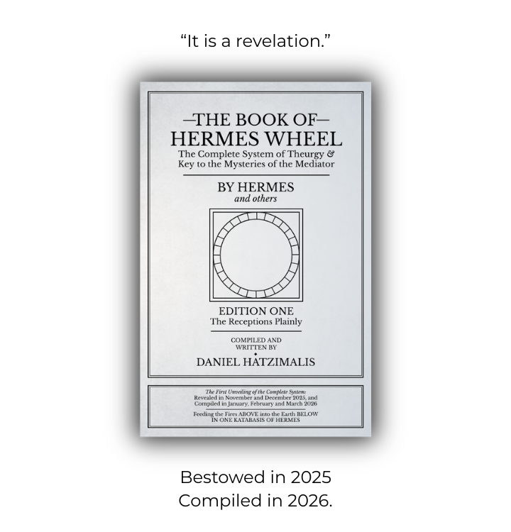

This is not a book about theurgy.
It is a theurgic book, and a faithful record of its own bestowal.
In November and December 2025, a ceremonialist who knew nothing about theurgy was holistically possessed by a god. This was the first action in a 31 day sequence of True Divine Union — which, in the end, left a complete path to attain union.
Each part forming the whole of the system came through a mimesis (reenactment) of the primordial descent from One, to many - revealing the hierarchy of All, while simultaneously embodying this cosmology in receptions themselves.
Three days into the material period of this descent, the centrepiece of the system was given: Hermes Wheel, which generated a new category of theurgic tool upon its reception.
Less than 36 hours later ΣΑΤΥΓΑΝ (Satygani) came, a functioning new word naming the unique state & effect of the system’s divine frenzies. Three Links & the ritual to empower (animate) The Wheel came next — and material receptions continued pouring until the Holy Table.
This Holy Table completed the setup making Hermes’ Wheel operative, providing the structure of materiality, with 7 planets under 4 quarters, encased by a solar order – accompanied by the 28 names of these “Forces above Forces.”
After The Table, no new receptions came; it marked the end of the bestowals.
When this Holy Table meets Hermes Wheel, a universal setup & praxis is born – and henosis ceases to be a vague desire, becoming the natural result of a laid-out path:
Once every twenty-four hours the practitioner is bathed in light over twenty-eight day rotations, culminating in three hundred sixty-six day orbits.
Immediately after the month which brought the system, everything was compiled in its original order – unveiling a path previously only known by the gods.
Less than three months later The Book of Hermes Wheel was released, containing the receptions plainly & their manner of discovery. By its end, a reader has seen: The Cosmology, The Initiation, The Receptions, and The Culmination – together forming a Key to the Mysteries herein.

GET NOWFirst Edition: The Receptions Plainly
Feeding Fires of Above,
Into the Earth Below.
"Without intending to, your words brought me into direct contact with Sabazios (Dionysus) and his current."
"The contact was not bounded by music or ritual. They were not looking at sterile text in a museum, but a homily to divinities sang in these pages."
"I've had the pleasure of watching, from the start, what seems to be the twenty-first century's theurgist channel the twenty-first century's guide to an ancient art. It is a revelation."
"I just flipped to the Hymn page, didn’t read any of it and could just feel the power behind it [...] opening that page I felt a swelling in and around my head, this has only happened when visiting vortex sites around the country."
To HERMES, who Manillius called the only god clever enough to steal the great cosmic mystery controlling all things – “It is to this god, HERMES, that we dedicate this book, and this god who we thank for what is contained herein. [...]
It is Hermes who I thank for these receptions, and who I admire through them.
It is Hermes who is my link to the world above, and who makes its gifts known.
It is Hermes who tasked me to compile this book”
XII. Closing The First Work, The Book of Hermes Wheel.